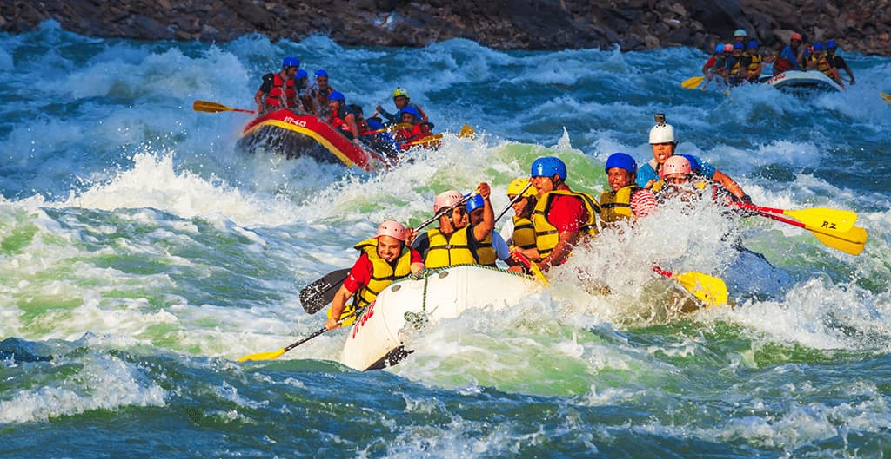

To ignite a passion for the outdoors by providing the safest, most exhilarating gateway to the whitewater world, proving that a single ride down the Tryweryn can change your entire perspective on life.


To ignite a passion for the outdoors by providing the safest, most exhilarating gateway to the whitewater world, proving that a single ride down the Tryweryn can change your entire perspective on life.
Today, when you paddle these waters, you aren't just rafting—you are riding through history itself. The Tryweryn is the UK's original and best whitewater rafting venue, offering thrilling experiences on Grade 3-4 rapids that have been enhanced by the dam releases, creating a consistent and powerful flow unmatched by any other UK river . Our expert guides don't just steer the boat—they carry the legacy of this valley, sharing its stories and ensuring your rafting trip becomes a benchmark for adventure